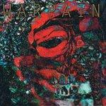
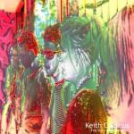
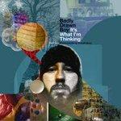
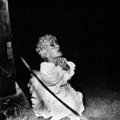
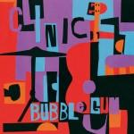

Music Reviews
-
The Extra Lens Undercard
It’s almost too easy to fill a review of The Extra Lens, formerly The Extra Glenns, with trite references to the makeup of the band. Yes, John Darnielle — The Mountain Goats, popularly — and Franklin Bruno — of the Human Hearts and Nothing Painted Blue — make up the group, and yes, this is only their second full-length. That’s hardly the point, though.
Matthew Montgomery reviews... -

Warpaint The Fool
After taking their precious time, the famed Los Angeles foursome finally muster up the courage to release their layered, atmospheric debut.
Juan Edgardo Rodríguez feels strangely fine... -

Kings of Leon Come Around Sundown
On their fifth album, a weary Kings of Leon want the simple life back down South.
Cara Nash writes... -
Floored By Four Floored By Four
Bass legend Mike Watt goes fusion with a little help from his friends.
Sean Caldwell reviews... -

Keith Canisius This Time It's Our high
From the opening notes of Keith Canisius’s latest effort, This Time It’s Our High, waves of those familiar obfuscated vocals pour over listeners in a way only a musician well-versed in the intricacies of reverb is capable.
Matthew Montgomery reviews... -
Les Savy Fav Root for Ruin
They aren't on the top of their game here, but as you'd expect, Les Savy Fav have made yet another likable, assaulting, and occasionally brilliant indie rock album.
Luke Winkie's Sweat is Descending... -

Badly Drawn Boy It's What I'm Thinking Pt.1 – Photographing Snowflakes
It's been a long time coming, but the king of alternative folk is back. Consider this a part of his "brilliant phase".
Chris Coplan reviews... -

Deerhunter Halcyon Digest
Deerhunter have firmly established themselves as one of the best bands in independent music with their latest masterpiece.
Andrew Baer didn't think it was possible to love this band any more... -

Clinic Bubblegum
Consistent neo-psychedelic foursome spike their trademark sound - well, just a notch.
Juan Edgardo Rodríguez proudly wears his surgical mask while listening... -

Sufjan Stevens The Age of Adz
O Brother, where art thou?
Alan Shulman reviews...